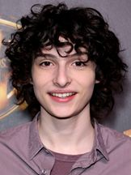

PERSONAGENS PRINCIPAIS:
Volte a página inicial
- Bill Skarsgård
- Personagem: Pennywhise (it)
- Atividades: Ator, Produtor Executivo
- Nome: Bill Istvan Günther Skarsgård
- Apelido: Bill Skarsgård
- Nacionalidade: Sueco
- Nascimento: 9 de agosto de 1990 (Vällingby, Estocolmo, Suécia)
- Idade: 31 anos
- Finn Wolfhard

- Personagem: Richie Tozier
- Atividade:Ator
- Nacionalidade: Canadense
- Idade: 19 anos
- Jaeden Martell
- Personagem: Bill Denbrough
- Atividade: Ator
- Nome: Jaeden Lieberher
- Nacionalidade: Americano
- Nascimento: 4 de janeiro de 2003 (Filadélfia, Pensilvânia, Estados Unidos)
- Idade: 19 anos
- Sophia Lillis
- Personagem: Beverly Marsh
- Atividade: Atriz
- Nacionalidade: Americana
- Nascimento: 13 de fevereiro de 2002 (Crown Heights, Nova York, Nova York)
- Idade: 20 anos
- jeremy Ray Taylor
- Personagem: Ben Hanscom
- Atividade: Ator
- Nacionalidade: Americano
- Nascimento: 2 de junho de 2003
- Idade: 19 anos
- Jack Dylan Grazer
- Personagem: Eddie Kaspbrak
- Atividade: Ator
- Nacionalidade: Americano
- Nascimento: 3 de setembro de 2003 (Los Angeles, Califórnia, EUA)
- Idade: 18 anos
- Wyatt Oleff
- Personagem: Stanley Uris
- Atividade: Ator
- Nacionalidade: Americano
- Nascimento: 13 de julho de 2003
- Idade: 18 anos
- Chosen Jacobs
- Personagem: Mike Hanlon
- Atividade: Ator
- Nacionalidade: Americano
- Nascimento: 1 de julho de 2001 (Springfield, Massachusetts, Estados Unidos)
- Idade: 20 anos
Volte ao topo